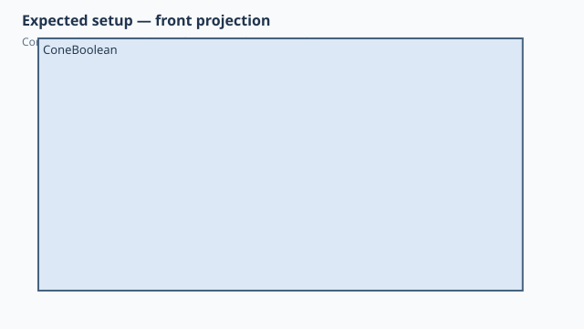

Forge model example · 2 · Parent/child features and faces
Cone as a native Boolean feature
What this example makes
One connected native body retains the filleted Box history and the joined tapered Cone.


Forge code
This is the complete Forge source used for this example.
"""Public Verification model for Cone Boolean feature compilation (#746)."""
class ConeBoolean:
def build(self):
body = Box(
50,
40,
20,
anchor=Anchor.BOTTOM,
).fillet(2, edges=Edges.VERTICAL)
flare = Cone(
d=18,
top_d=10,
h=8,
anchor=Anchor.BOTTOM,
).at(0, 0, 18, anchor=Anchor.BOTTOM)
return body + flare
ConeBoolean()
API used
`Box(...).fillet(...)`, `Cone(...).at(...)` and the normal `+` Boolean operator.
Reference code
The same model is written independently with the reference libraries below. This makes it easier to compare modelling style and the resulting shape.
How Forge builds it in SolidCraft
The Box and fillet establish ordered feature history. Forge then delegates the placed Cone operand to the shared primitive Boolean lowering and emits native `solid.cone` with `operation=join`, the existing body as target and the authored placed base.
SolidCraft result
Built and measured from the accepted durable SolidCraft evidence. Open the measurement details to inspect body sizes and editable parameters.
Original model · 1 bodies
Editable parameters
Body size
| Body | Minimum | Maximum | Volume mm³ | Faces | Edges | Closed |
|---|---|---|---|---|---|---|
| ConeBoolean | [-25.0, -20.0, 0.0] | [25.0, 20.0, 26.0] | 40741.85831691334 | 12 | 27 | True |
verification/visual.json policy. The durable isometric image above is a current presentation preview, not a visual PASS claim.
Technical test details
Verification checks
baseline · PASS
{
"body_count": {
"actual": 1,
"expected": 1,
"label": "SolidCraft body count",
"pass": true
},
"body_envelopes": {
"actual_count": 1,
"expected_count": 1,
"kind": "body_envelopes",
"matched_pairs": [
{
"actual": {
"label": "ConeBoolean",
"max": [
25.0,
20.0,
26.0
],
"min": [
-25.0,
-20.0,
0.0
]
},
"expected": {
"label": null,
"max": [
25.0,
20.0,
26.0
],
"min": [
-25.0,
-20.0,
0.0
]
},
"max_delta": 0.0
}
],
"pass": true,
"tolerance": 0.01,
"unmatched_actual": [],
"unmatched_expected": []
}
}Geometry evidence
Are outer bounds sufficient? yes
The focused native model must remain one body with the unchanged Box footprint and a top extent of Z26. The command-contract test separately proves that the taper is authored as native `solid.cone` Boolean history rather than a temporary solid approximation.
Saved-design test
Not required for this focused compiler-route case. Parameterized Cone expressions, direct joins and Cone cuts remain covered by the #746 reusable compiler tests.
Raw test files
Accepted source files
- Forge model source
examples/cone-boolean/scpf/model.py - Integration contract test
examples/cone-boolean/tests/test_contract.py - Verification contract
examples/cone-boolean/verification/verify.py
SolidCraft model and verification evidence
- Baseline measurements
model_verify/baseline/measurements.json - Native SolidCraft design
model_verify/native/model.sc - Native STEP export
model_verify/native/model.step - Native replay log
model_verify/native/replay-log.json - phase-1-results.json
model_verify/native/replay_work/phase-1-results.json - phase-1.json
model_verify/native/replay_work/phase-1.json - Native execution results
model_verify/native/results.json - Presentation preview image
model_verify/presentation/preview-iso.png - Presentation preview metadata
model_verify/presentation/preview.json - Verification result
model_verify/verification.json - Generated SolidCraft command JSON
solidcraft.json
Reference documentation
- Native SolidCraft history — This case verifies Forge-to-SolidCraft native feature lowering; external kernel references are optional and are not fabricated.
Site source 80bc83e72e34e0dce6e6df745d2ebf8f96111379 · accepted model evidence source
4ea3096f3f5b5d53eef48bfb25b62185908f96df · durable build ee6f7126001b40f4dad656cfabd0f98d984df3a4
Sources of truth
General model/page metadata is stored in model.yml.
Preserved engineering explanation is stored in README.md.
Exact expected values and tolerances are defined by
verification/verify.py.